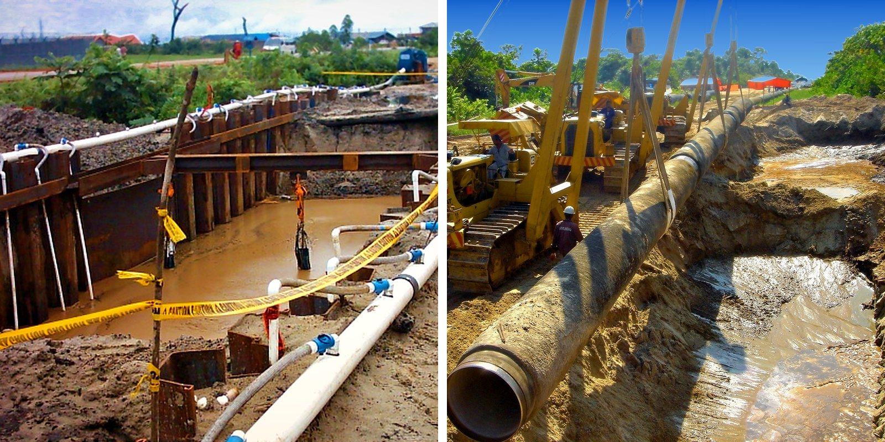
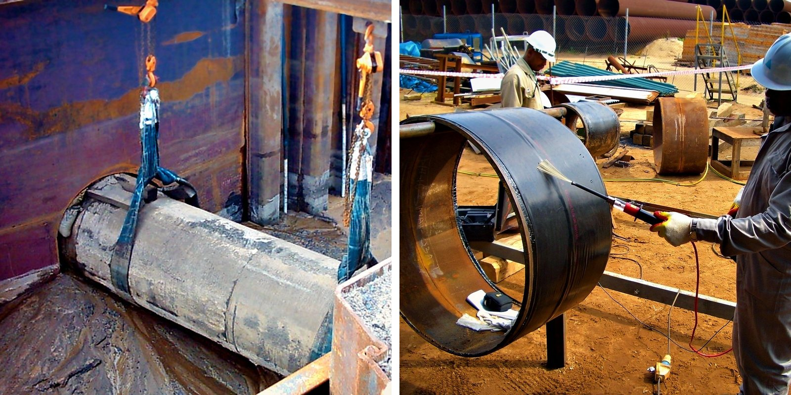
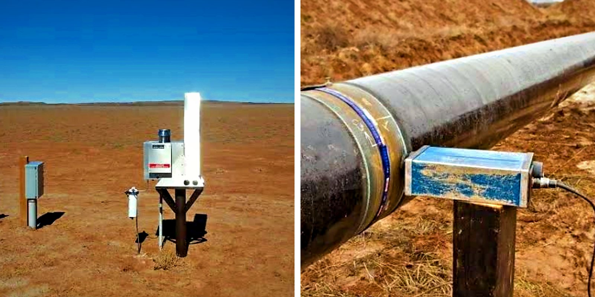
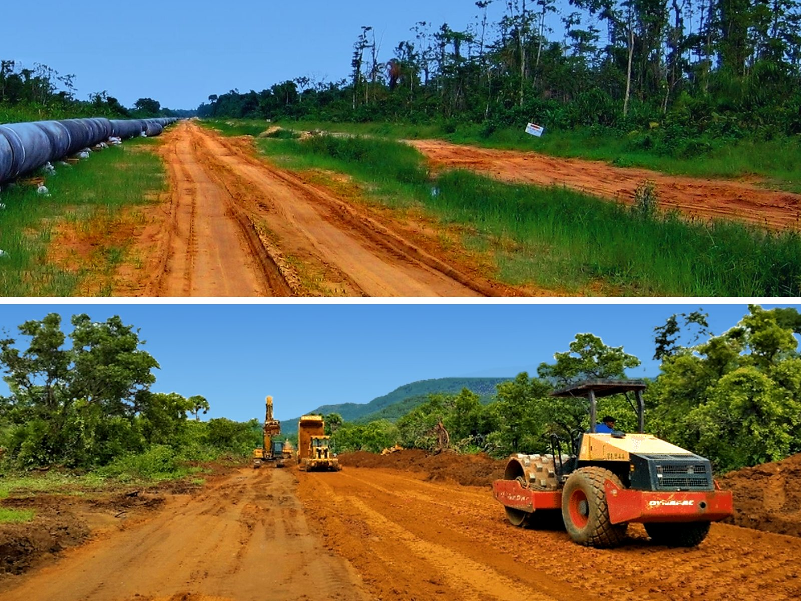
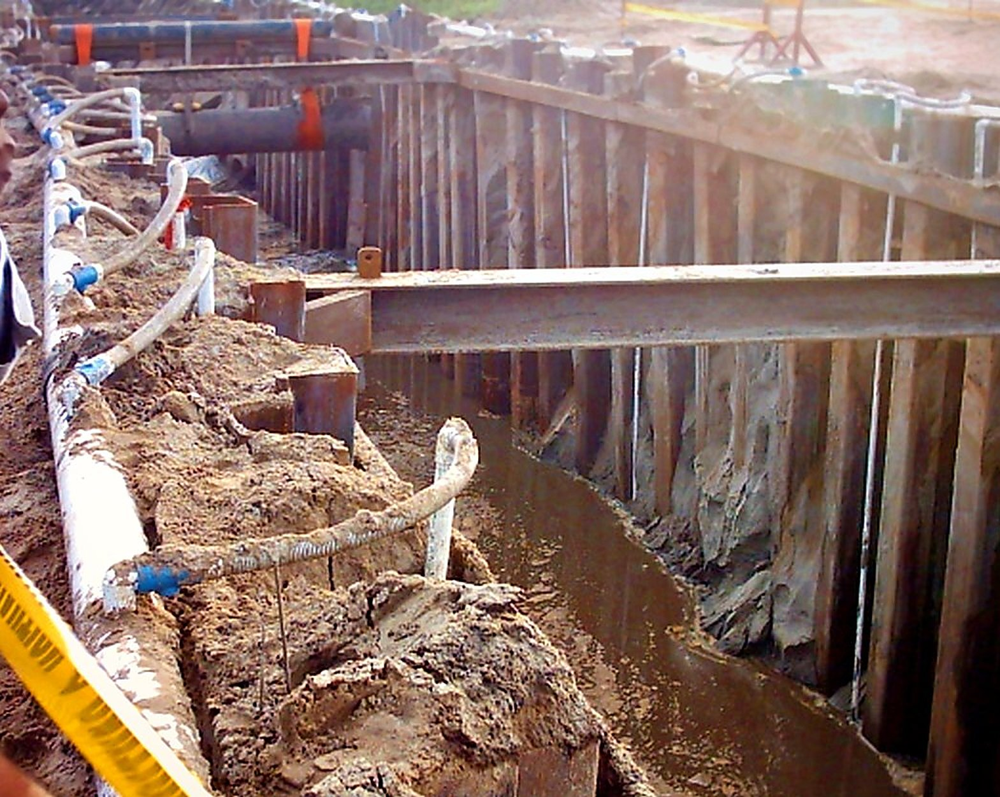
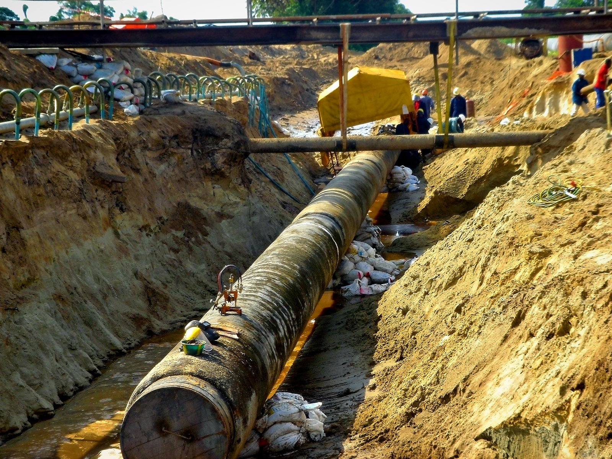
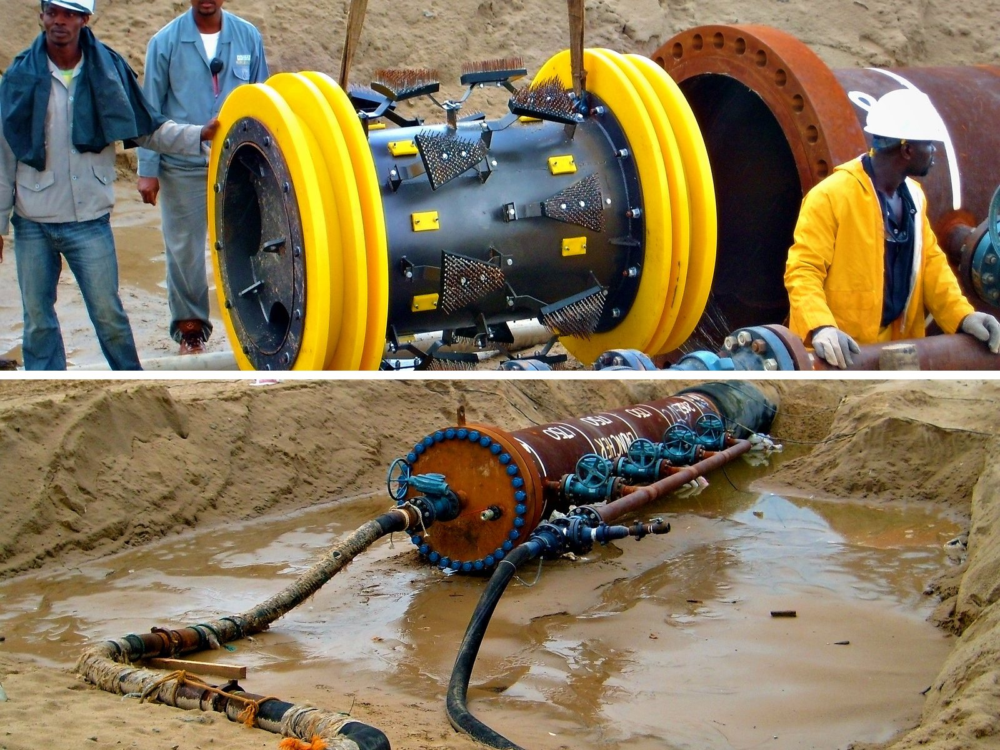

Associated Works
Everything around the mainline that makes a pipeline operational, secure and compliant.
Overview
Beyond the mainline spread
A pipeline cannot operate on buried pipe alone. Testing, protection systems and civil infrastructure all have to be delivered, and built to fit the mainline schedule.
ICON delivers these associated works with dedicated crews alongside the mainline spread, so interfaces, tie-ins and testing are planned and managed as one project.

Scope
What we deliver
01
Open-Cut River & Stream Crossings
- In-stream trenching: excavation across rivers, streams and drainage channels
- Flow control: dam-and-pump, flume and cofferdam methods to keep work areas dry
- Crossing sections: pre-fabricated, concrete-coated or weighted pipe pulled or lowered into place
- Bank restoration: backfill, riprap and erosion protection to the agreed contours

02
Tie-Ins, Repairs & Maintenance
- Tie-ins: connecting test sections, crossings and existing lines, including golden welds with full NDT where hydrotesting is not possible
- Hot taps and stopples: connections to live lines with specialist partners
- Pipeline repair: sleeves, recoating and cut-outs
- Replacement and lowering: rerouting, replacing or lowering existing pipelines

03
Testing & Pre-commissioning
- Cleaning and gauging with pigs through each test section
- Hydrostatic testing to the specified pressure and hold period
- Dewatering, drying and handover to operations

04
Protection & Stabilization
- Cathodic protection: transformer-rectifiers, anode groundbeds, test posts and coupons
- Buoyancy control: installation of concrete set-on weights and screw anchors in wet ground
- Slope stabilization: retaining walls, gabions, terracing and erosion control

05
Civil Works, Temporary Infrastructure & Right-of-Way
- Access roads: new and upgraded roads for pipe haulers and heavy equipment
- Pipe yards and staging areas: stockpiles, double-jointing yards and equipment maintenance
- Construction camps: accommodation, water treatment and power for remote sites
- Dewatering and excavation support: wellpoints, sheet piling and cofferdams
- Foundations and piling for facility equipment, winch yard, pipe supports and buildings
- Pipeline markers and warning signs at crossings, boundaries and line-of-sight points, plus aerial markers for patrol
- Fencing and gates for valve sites and permanent easements
- Reinstatement of the right-of-way after construction
In the Field
Associated works at work





